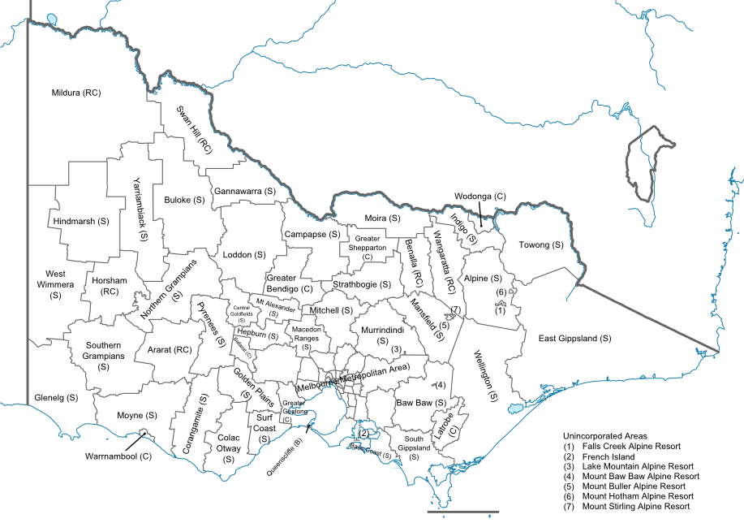
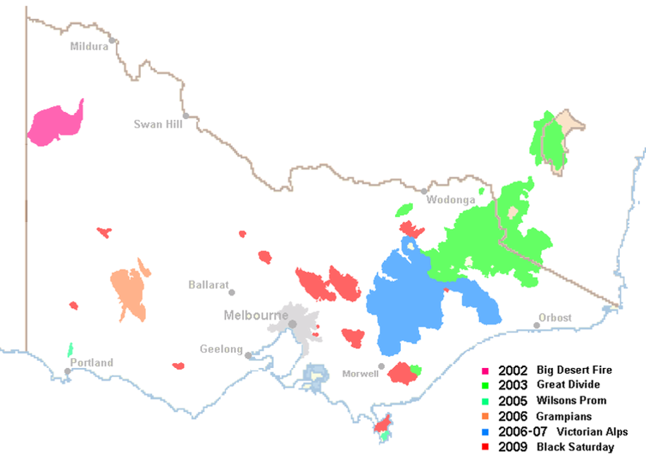
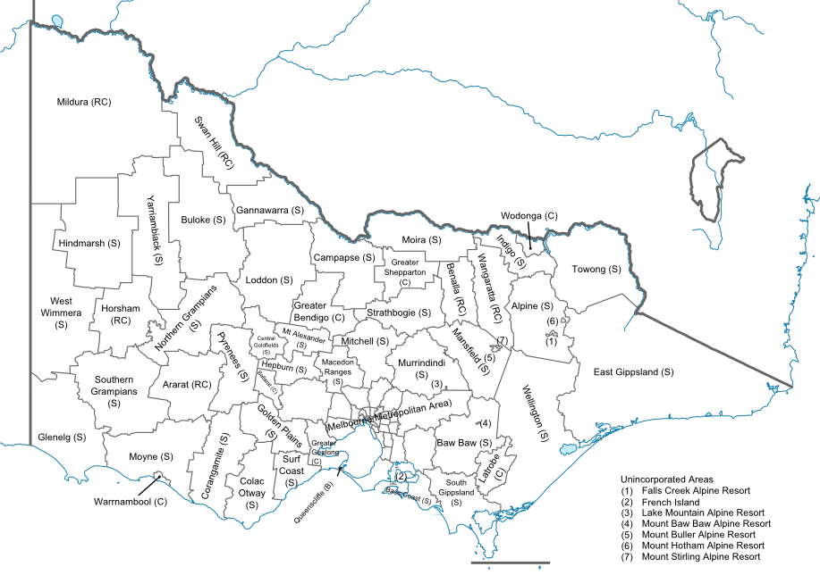
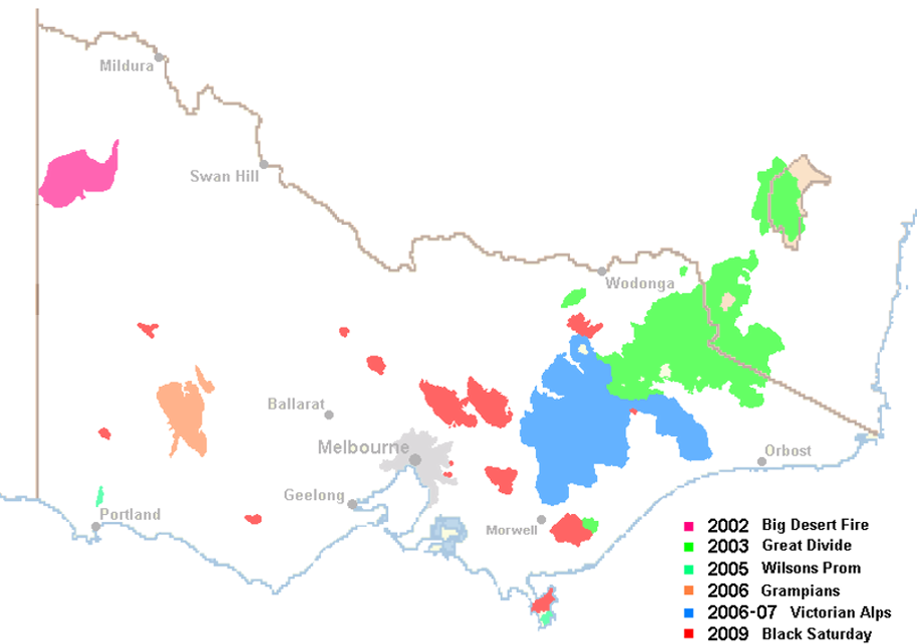

Which municipalities have been the locations of the most planning permits? How have these trends changed over the last 5 years? Are rail upgrade projects well placed? What do we know about fire in the regions of growth?
Click on a year to see the relative number of permits for that levy return year. The darker the municipality appears on the map, the more permits were approved for that levy return year. You may click the toggle buttons to include map overlays such as fire affected regions since 2000, and the current rail infrastructure, including the sit of the current rail duplication upgrade to Melbourne's west.